Return to current Nursery reportDoctor washing: dated captures remain below the action standard
All 1,023 consecutive preserved baseline frames across four training/authored catalog fixtures were directly reviewed on 24 complete boards, plus twelve native details. These images predate the current Nursery changes. They provide historical evidence; current Doctor rendering, ordinary story entry, complete career rewards and device/child/owner acceptance remain unverified.
The complete dated wash remains 2.7/5. Twelve components and interactions below are inclusive priorities at ≤4.5. The older review files and their scores remain preserved. No Doctor production art or mechanics changed in this review.
Individual evaluations and evidence hashes · Complete coverage index
Basin painting and material — 2.9/5
A clear aqua oval is recognizable as a basin, but its flat fill and isolated purple rim do not match the broad painted bands and authored volume of the surrounding room. Reuse a complete painted basin assembly at an intentional support plane.
DOC-DATED-USE-01 · dated mounted/action opinionTap and operating cues — 3.0/5
The large yellow arch and pink/teal dots read as a generic symbol. No legible connected outlet-to-hands stream establishes wetting or rinsing. Paint the tap, outlet and handles coherently and show its actual on/off state.
DOC-DATED-USE-02 · dated mounted/action opinionIndividual washing-hand symbols — 2.2/5
The peach mitten shapes terminate at arbitrary ends over the bowl; they are separated from the visible body. They do not explain a palm/back-of-hand scrub. Replace them with authored complete body-connected work poses.
DOC-DATED-USE-03 · dated mounted/action opinionBody-to-tool contact — 2.3/5
Roshan remains far left, gesturing near her face while the washing symbols sit at the right. Her wrists and attention never reach the basin in these frames. Mount a single coherent actor/contact assembly before scoring action.
DOC-DATED-USE-04 · dated mounted/action opinionReciprocal rubbing action — 2.4/5
Across every ordered frame, changing rings and highlights show progress but do not show opposite palms making readable reciprocal strokes. Directional pose changes must demonstrate the actual rub while conserving hands, wrists and the basin.
DOC-DATED-USE-05 · dated mounted/action opinionWet, rinse and clean consequence — 2.2/5
There is no clear wet-to-lather-to-rinse-to-clean hand sequence connected to the actor. The final state still relies on symbolic effects. Show water meeting the hands, contained foam and a legible clean-hand end state.
DOC-DATED-USE-06 · dated mounted/action opinionFoam and progress overlays — 2.5/5
White rings dominate the small work target and do not establish lather between two contacting palms. Keep foam local to the work, with purposeful change rather than progress substituted by concentric graphics.
DOC-DATED-USE-07 · dated mounted/action opinionEarned celebration presentation — 2.4/5
Pearls and rings celebrate the earned hold but do not communicate the actual washed result. Preserve reward ownership and timing while showing clean palms and restrained context-specific effects.
DOC-DATED-USE-08 · dated mounted/action opinionRoom and activity composition — 2.8/5
The ornate painted promenade retains appealing pastel identity. The detached dark work oval obscures its invitations; blurred edge copies and rectangular crop seams undermine the room. Plan an authored work surface and explicit actor/support placement.
DOC-DATED-USE-09 · dated mounted/action opinionWide viewport composition — 2.9/5
The 1600-wide view exposes navy side fields while the crowded central composition remains small. Compose for both widths with readable work placement, avoiding empty border area and duplicated blurred scenery.
DOC-DATED-USE-10 · dated mounted/action opinionWash-to-next-phase continuity — 3.0/5
The detached wash oval disappears and Roshan swaps to a different tool/pose for the next invitation. The route is mechanically readable in the fixture, but the physical consequence and actor transition remain abrupt. Review entry, earned result, clearing and the next task together.
DOC-DATED-USE-11 · dated mounted/action opinionComplete meaningful wash — 2.7/5
The preserved four fixture sequences do not demonstrate body-connected wetting, reciprocal scrubbing, rinsing and clean palms. This retains the prior dated whole-action opinion; none of these scores approve current rendered Doctor gameplay.
DOC-DATED-USE-12 · dated mounted/action opinionEvery native detail
opera_training_doctor_1280 · frame 60 · original native pixelsopera_training_doctor_1280 · frame 170 · original native pixelsopera_training_doctor_1280 · frame 249 · original native pixelsbirthday_story_catalog_doctor_1280 · frame 61 · original native pixelsbirthday_story_catalog_doctor_1280 · frame 171 · original native pixelsbirthday_story_catalog_doctor_1280 · frame 250 · original native pixelsopera_training_doctor_1600 · frame 61 · original native pixels opera_training_doctor_1600 · frame 171 · original native pixels
opera_training_doctor_1600 · frame 171 · original native pixels opera_training_doctor_1600 · frame 250 · original native pixels
opera_training_doctor_1600 · frame 250 · original native pixels birthday_story_catalog_doctor_1600 · frame 61 · original native pixelsbirthday_story_catalog_doctor_1600 · frame 171 · original native pixelsbirthday_story_catalog_doctor_1600 · frame 250 · original native pixels
birthday_story_catalog_doctor_1600 · frame 61 · original native pixelsbirthday_story_catalog_doctor_1600 · frame 171 · original native pixelsbirthday_story_catalog_doctor_1600 · frame 250 · original native pixelsEvery ordered frame
Boards are QA thumbnails. Open any board for the full image; use the native details above for fine material and contact assessment.
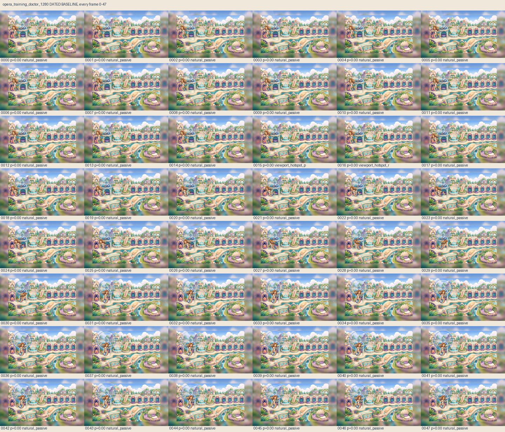
opera_training_doctor_1280 · all frames 0–47opera_training_doctor_1280 · all frames 48–95opera_training_doctor_1280 · all frames 96–143opera_training_doctor_1280 · all frames 144–191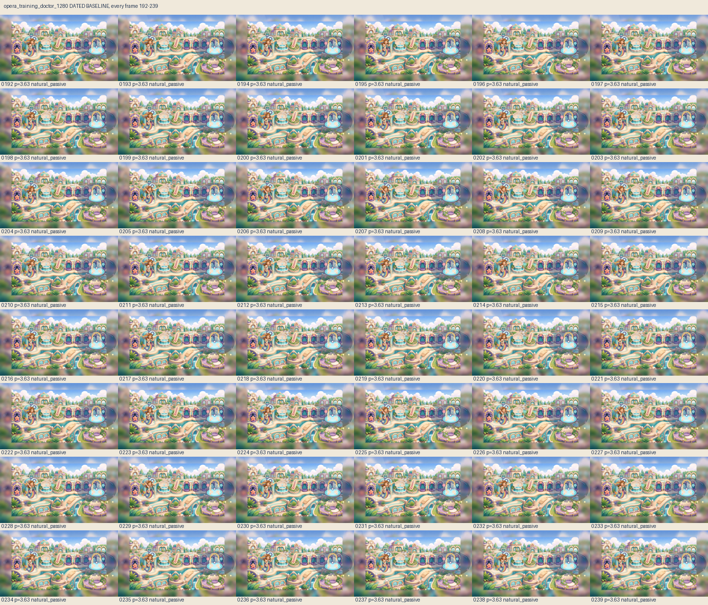
opera_training_doctor_1280 · all frames 192–239opera_training_doctor_1280 · all frames 240–254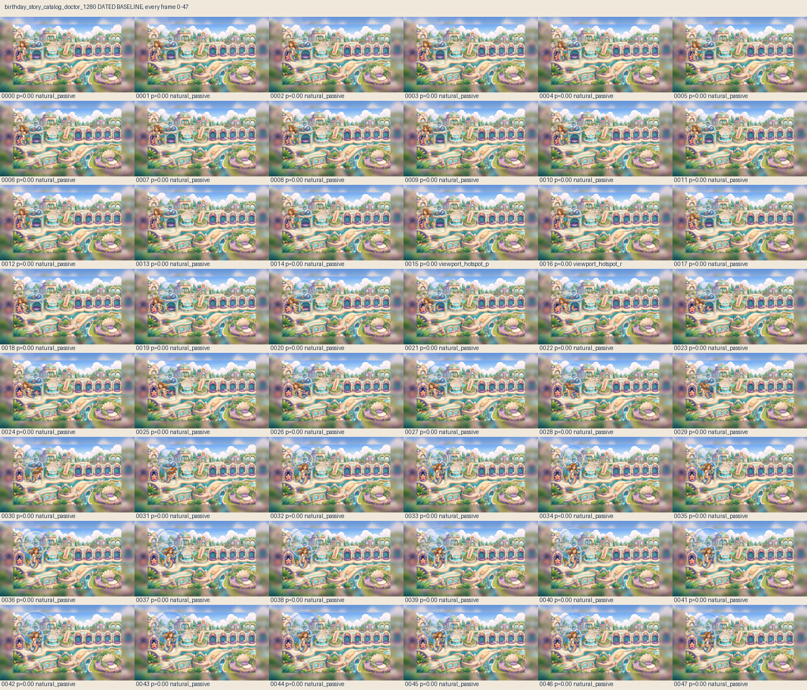
birthday_story_catalog_doctor_1280 · all frames 0–47birthday_story_catalog_doctor_1280 · all frames 48–95birthday_story_catalog_doctor_1280 · all frames 96–143birthday_story_catalog_doctor_1280 · all frames 144–191birthday_story_catalog_doctor_1280 · all frames 192–239birthday_story_catalog_doctor_1280 · all frames 240–255opera_training_doctor_1600 · all frames 0–47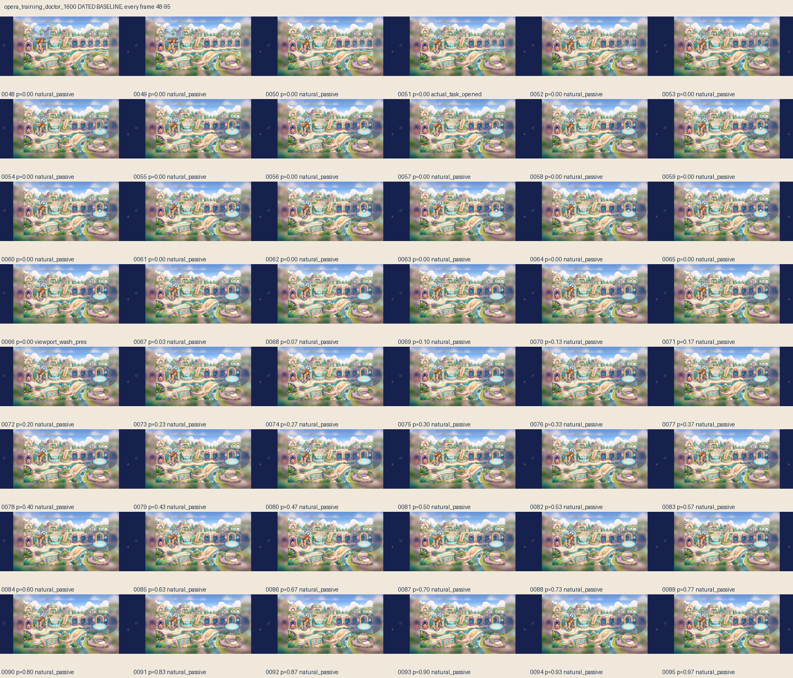
opera_training_doctor_1600 · all frames 48–95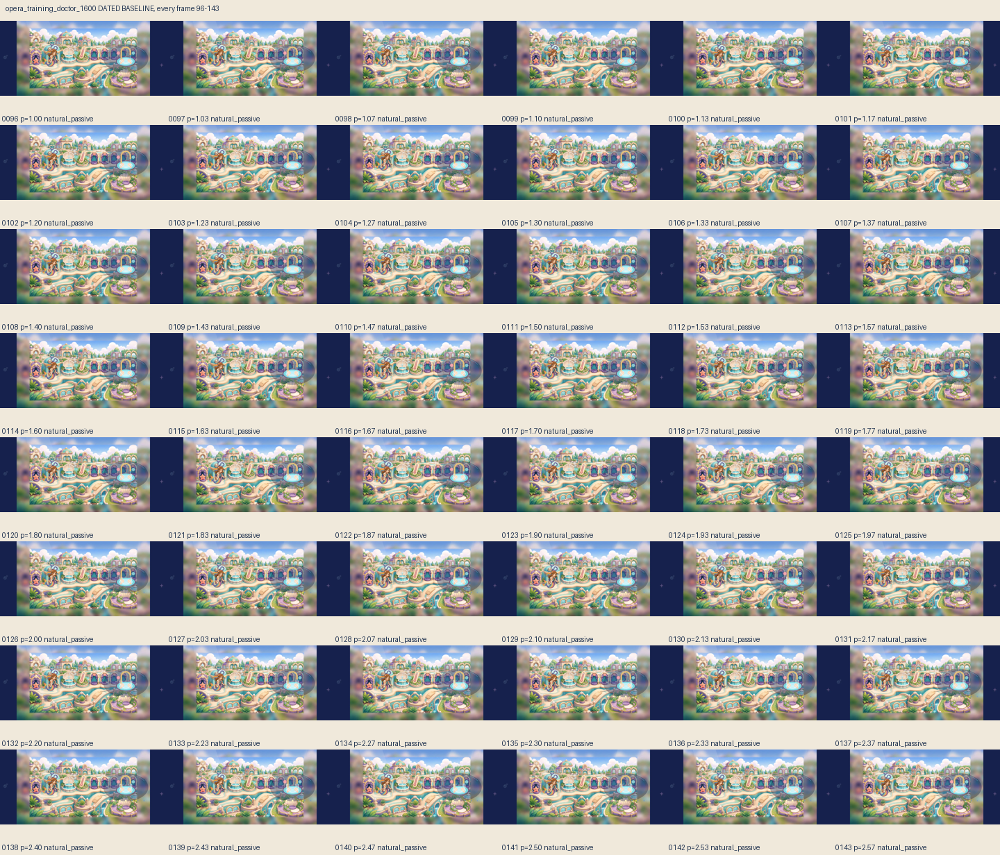
opera_training_doctor_1600 · all frames 96–143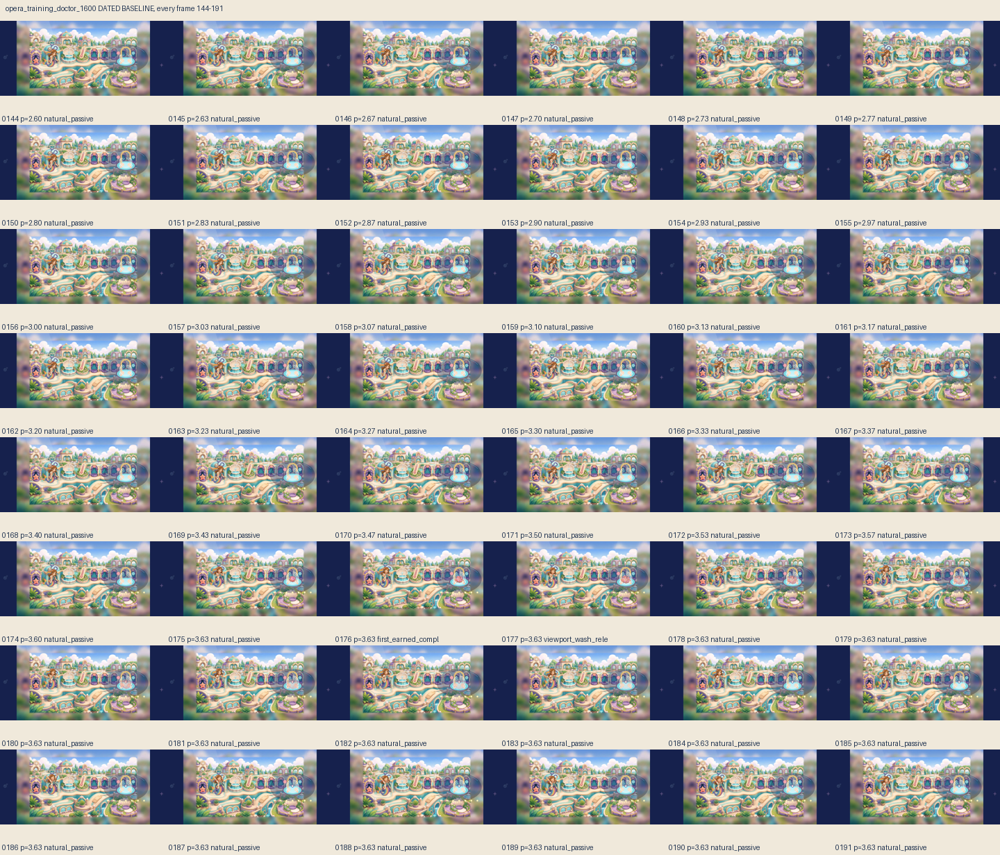
opera_training_doctor_1600 · all frames 144–191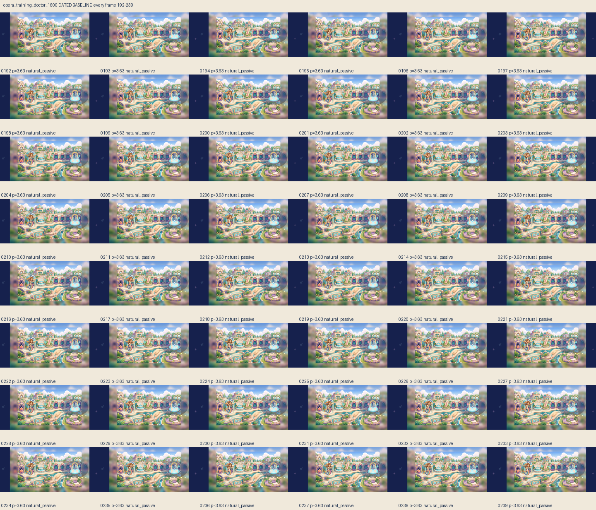
opera_training_doctor_1600 · all frames 192–239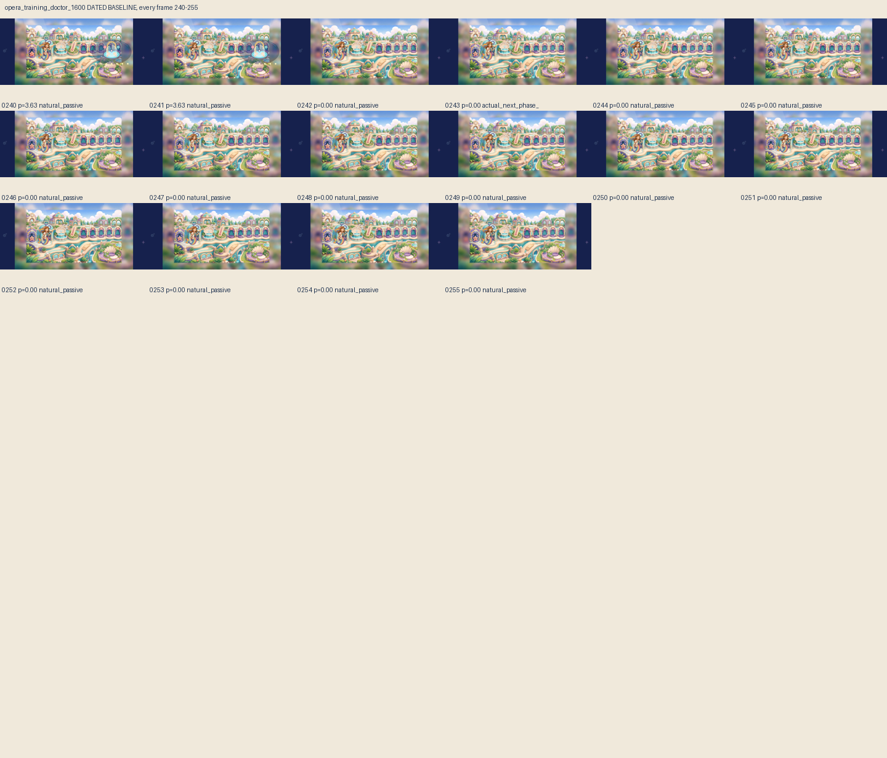
opera_training_doctor_1600 · all frames 240–255birthday_story_catalog_doctor_1600 · all frames 0–47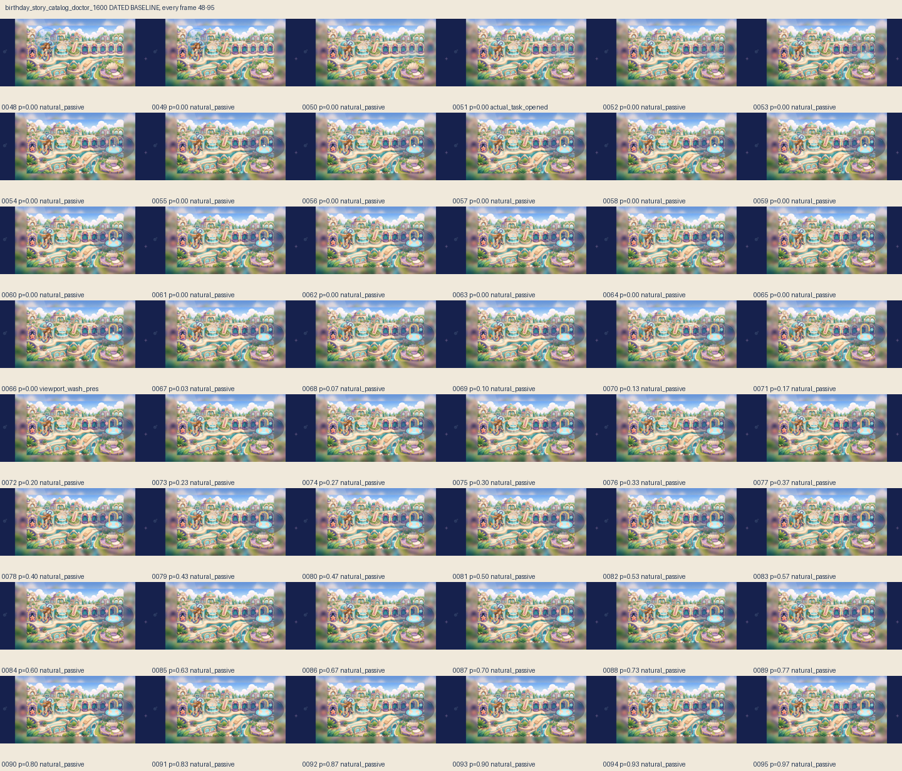
birthday_story_catalog_doctor_1600 · all frames 48–95birthday_story_catalog_doctor_1600 · all frames 96–143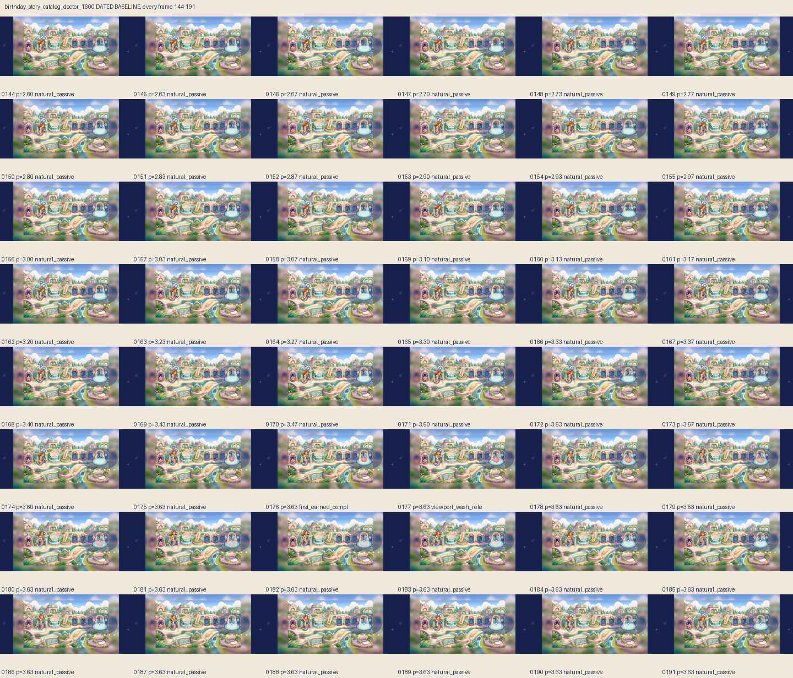
birthday_story_catalog_doctor_1600 · all frames 144–191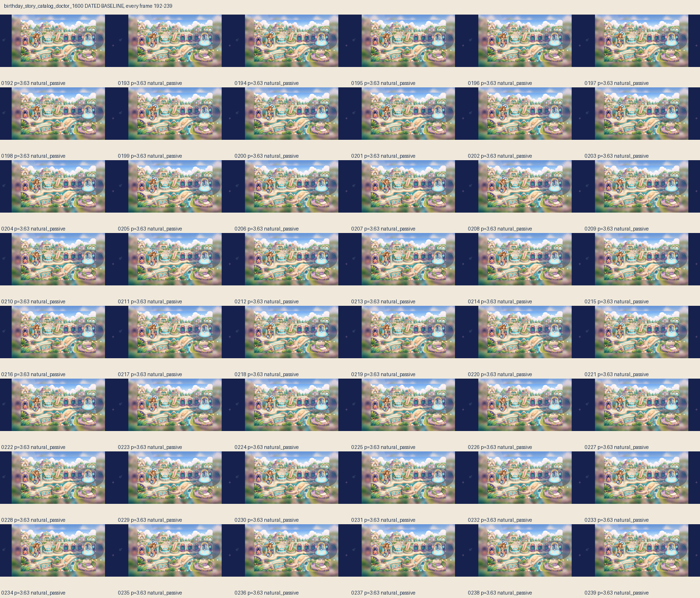
birthday_story_catalog_doctor_1600 · all frames 192–239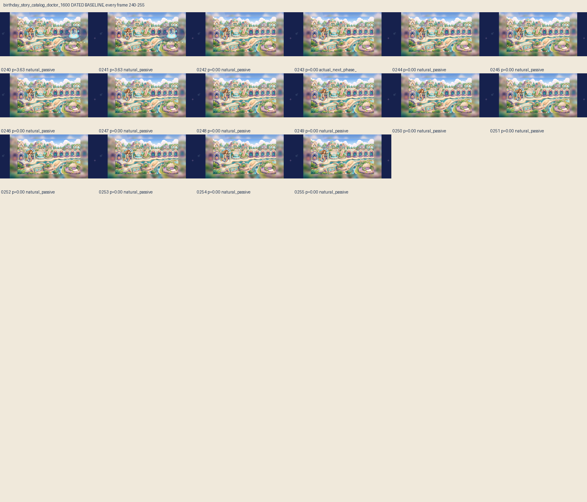
birthday_story_catalog_doctor_1600 · all frames 240–255